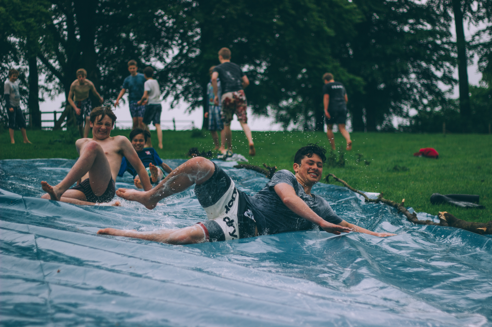

A youth center or youth centre, often called youth club, is a place where young people can meet and participate in a variety of activities, for example table football, association football (US soccer, UK football), basketball, table tennis, video games, occupational therapy and religious activities. Youth clubs and centres vary in their activities across the globe, and have diverse histories based on shifting cultural, political and social contexts and relative levels of state funding or voluntary action.